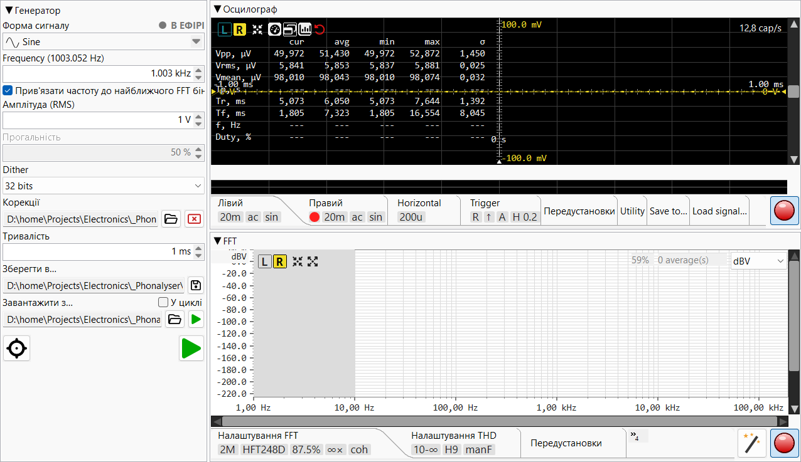

Прецизійний стенд для вимірювання аудіо: генератор сигналів, осцилограф, FFT-аналізатор.
Натисніть F1 будь-де в програмі, щоб відкрити цю довідку. Натисніть Ctrl+F1, щоб перейти безпосередньо до розділу, що стосується елемента керування, який зараз у фокусі.
🚀 Найкоротший у світі HOW-TO — повне вимірювання THD з точністю до частин на мільярд, від калібрування до результату, на одному екрані. Почніть звідси.
🔍 «Покажчик і пошук» — пошук по всьому посібнику або перегляд алфавітного списку тем і термінів.
💡 Поради — дрібниці, які мають велике значення; також відображаються по одній під час запуску.
🙏 Подяки та визнання — натхнення і вдячність.

Головне вікно розділено на панель Генератора сигналів ліворуч (ширина регулюється — перетягніть роздільник або задайте у Налаштуваннях) і вертикальний роздільник між Осцилографом (вгорі) та FFT-аналізатором (внизу) праворуч. Кожну панель можна згорнути до смужки заголовка подвійним клацанням по заголовку; повторне подвійне клацання відновлює її.
Кожен модуль має власну панель інструментів — смужку вкладок налаштувань нижче основного вигляду з вкладками для параметрів модуля. Смужку вкладок також можна згорнути (подвійне клацання по смужці), щоб звільнити вертикальний простір для видимого графіка.
V/div,
t/div, FFT length мають маленькі стрілки вгору/вниз.
Колесо миші прокручує стандартні значення
(1-2-5-10), а введене вручну значення приймається, якщо воно
має сенс для даного поля.Довідка → Про Phonalyser показує версію та посилання на репозиторій проекту. Використовуйте Довідка → Повідомити про проблему, щоб зареєструвати issue на GitHub.